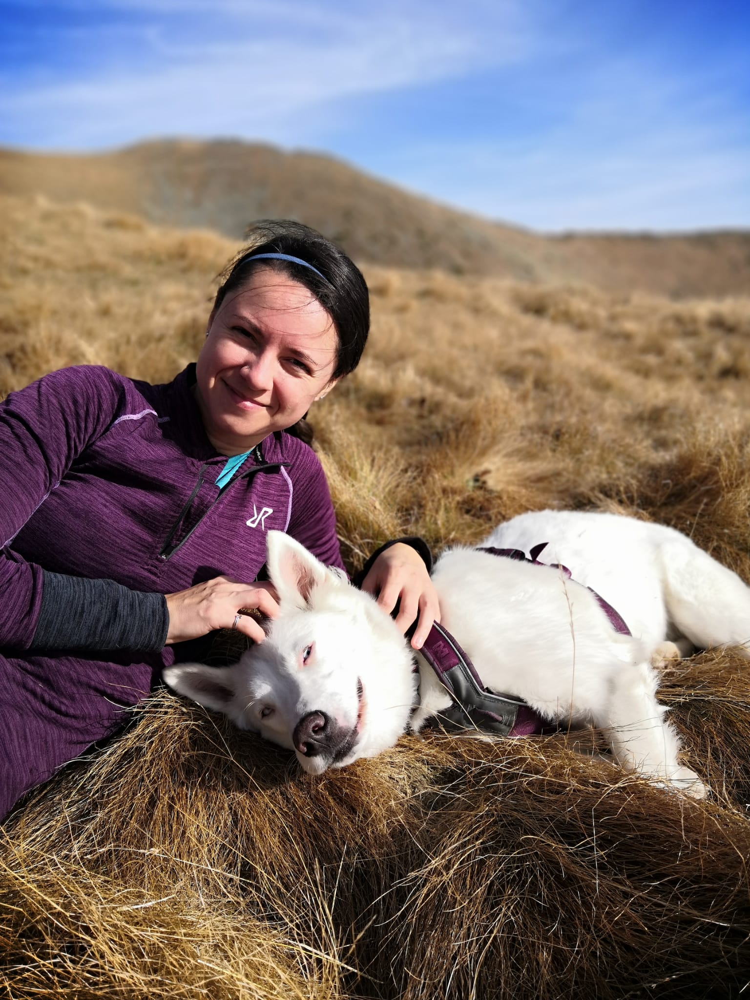
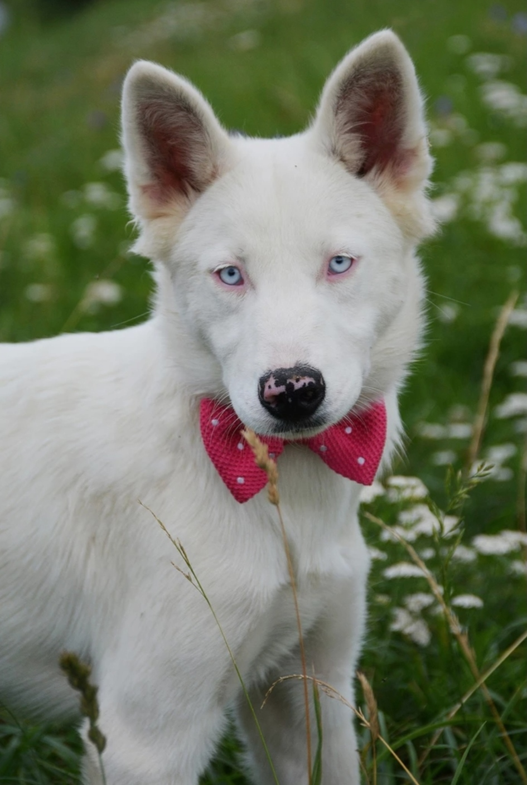
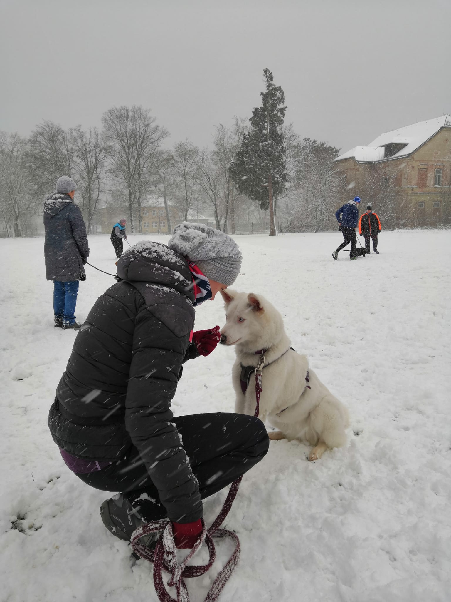
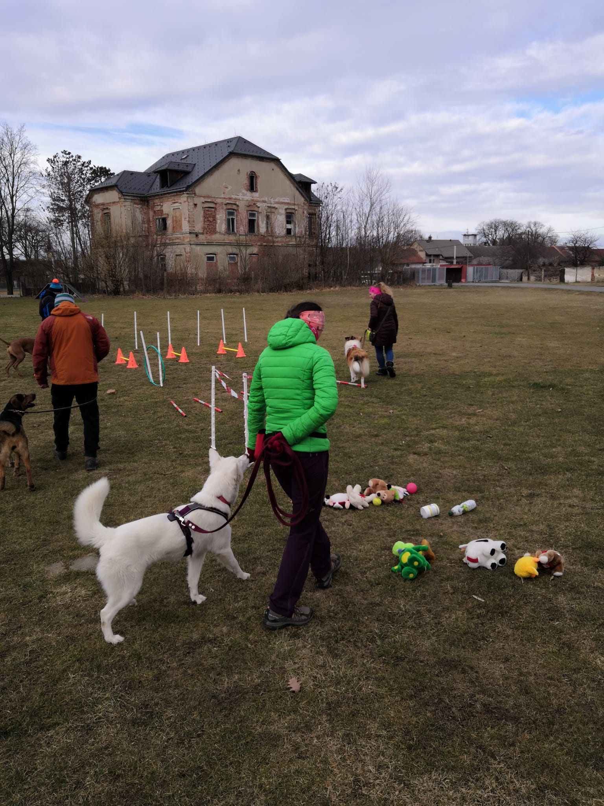

„Psovi je jedno, jestli jste bohatí, chudí, chytří, hloupí, oškliví, hezcí…
Dejte mu srdce a on Vám dá své.“ John Grogan
Něco o mě (nás)

Mé jméno je Dominika Kubínová a psí srdce je pro mě tím nejčistším a neúžasnějším místem na této planetě. Ovšem to neznamená, že jsem zanevřela na místa jiná. Hned po škole jsem objevila krásu cestování a dodnes mě to nadšení neopustilo. Je tu jen jeden středně velký, ale významný, chlupatý rozdíl oproti cestování v minulosti, a to je moje psí parťačka Ciri. V létě to budou dva roky, co spolu brázdíme evropské silnice, turistikujeme po krásných evropských stezkách nebo lovíme hraboše v českých luzích a hájích (teda já ne, to jen Ciri 😊).
Ciri, jakutská lajka aneb Češka narozená na Slovenku a původem z Ruska.
Ciri je Jakutská lajka, což je pracovní plemeno původem z Jakutska. Ciri aneb Cirilla, princess of Cintra. Kdo je fanoušek Zaklínače, ví moc dobře, kdo byl inspirací. Ale pozor, je tu jedna zásadní informace = jde o knížní sérii, NE o seriál!
Aneb… jednou jsem potkala jednoho moc zajímavého kluka, který hodně četl (knihomol jako já mimochodem). Jeho nejoblíbenější knižní sérií, jenž mě přiměl také záhy přečíst, byl a stále je Zaklínač, a když jsme si pořídili naši bílou modrookou psí parťačku z útulku, museli jsme jí přece vymyslet odpovídající jméno. Pro přítele byla volba jména jasná = Ciri. A tak naše bílá princezna dostala své jméno.
Útulok Tuláčik

Psalo se 15.8.2021 a já už tak dlouho otravovala, že chci psa z útulku, až se mi to nakonec splnilo. Jeli jsme pro ni předlouhých 5 hodin do slovenského útulku Tuláčik, který se nachází v Breznu. Vyhlédli jsme si ji podle fotky na webových stránkách útulku. Ve chvíli, kdy jsme přijeli k útulku, jsme začali být opravdu hodně nervózní. Vidět tolik smutných psích očí na jednom místě bylo opravdu velmi emotivní. Nejradši bych si je vzala domů všechny, ale to mi bohužel neprošlo. Ciri se v inzerátu jmenovala Sindy, ale nakonec jsme zjistili, že se pod jednou fotkou a jedním inzerátem skrývají 3 malá bílá třeštidla, jeden kluk a dvě holky. Náš výběr padl na fenečku s „flafatým“ čumáčkem, která přiběhla k příteli jako první a hned se k němu měla. Říká se, že si pes vybírá pána, tak jsme se podle toho řídili. V útulku zastávala mezi svými sourozenci roli hlavního „šikanátora“ :D, alespoň, co jsme za ty 2 hodiny v jejich výběhu vypozorovali.
V jednu chvíli běhala se svými sourozenci kolem nás a v tu druhou už seděla na zadních sedačkách našeho auta a vezli jsme ji domů. Po pár kilometrech jízdy v autě jsme si uvědomili, že jsme si měli přivézt klec nebo kennelku! Ovšem na to, že nikdy nejela v autě tak dlouhou dobu (s výjimkou cesty do útulku), zvládla cestu domů bravurně.
Nový domov
No jo, bylo těžké si zvyknout, ale pro nás, ne pro Ciri, ta byla vcelku dost flegmatická a jako by se jí ani po sourozencích nestýskalo. Možná to bylo tím, že měla už (prý) 6 měsíců, takže nebyla žádné pidi štěňátko, co by se mu stýskalo po mamince. V útulku nám řekli, že je původně z množírny, kde se mačkala v malých prostorách nějakého bytu i se staršími sourozenci, takže jsme neměli nejmenší tušení, co si musela prožít. I tak to nevypadalo, že by měla nějaké neblahé zlozvyky nebo následky. Sžila se s námi, její novou smečkou, dost jednoduše a působila, že je naprosto spokojená, ale oťukávala si nás a zkoušela, co vydržíme. Učení chůze na vodítku, obojek, postroj, chození čůrat ven, základní povely… Ze začátku to bylo náročné, ale zvládli jsme to (museli jsme)!
A jak to tak v dnešní době bývá, založila jsem jí instagramový účet! Je fotogenická, tak proč ne? Navíc to mělo jedno obrovské pozitivum, a to takové, že si nás tam našla nová panička jejího brášky z útulku! Ano, občas ty sociální sítě nejsou jen negativní záležitostí 😊.
Cvičák


Hned v září jsme s naším živým stříbrem začali navštěvovat školku pro štěňata, kde jsme socializovali a učili se základní povely. Cvičitelkám dělala Ciri takovou radost, že si vysloužila přezdívku „šprtka“. Jakmile měla jeden rok, přešli jsme do kurzu Základní poslušnosti a jednou za čas navštěvujeme kurz doteď.
Ciri aneb cestovatelka roku
Za dobu, co u nás Ciri našla trvalý a (snad) spokojený život, s námi procestovala už Slovensko, Rakousko, Slovinsko a Itálii, u nás v ČR celou Moravu a Slezsko (návštěva Čech nás teprve čeká). Cestovní plány máme stále velké, a to Polsko, Německo, Švýcarsko a Španělsko. Jak už to tak bývá, na dovolených nemůže jít nic hladce… Minulé léto nás cestou z dovolené v Itálii zastihla kousek od Brna bouřka. Měli jsme to už jen hodinu cesty domů, ale jakmile Ciri zahlédla blesk, bylo o zábavu postaráno. Kennelka to odnesla rozškubaným vchodem, my nervy na pochodu a Ciri se dodnes bojí jezdit autem. Člověk by si řekl, že po pár dalších jízdách autem ji to přejde, ale opak je pravdou. Ovšem stále se snažíme strach odbourat, jen je to těžší, než se zdá. V jednom článku radili vyměnit auto… Že by? :D
K pobavení
Někdy si s ní jdete jen tak po polní cestě a ona začne skákat jako klokan, když uvidí hraboše.
Začne hrabat vedle polní cesty, že ho chytí a máte vlasy plné hlíny.
Jindy se jí slepice začnou popelit před kotcem na zahradě a ona se může zbláznit, jak skáče a štěká celá rozčilená, že se jí nebojí. Ocas prostrčí kari sítí kotce a Ciri je za něj tahá dovnitř.
Když začne línat, máte pocit, že už se těch chlupů na oblečení, v jídle a v koberci nikdy nezbavíte. Všude kolem se válí chuchvalce v průvanu a vy si připadáte jako na divokém západě ve chvíli, kdy kolem proletí seschlý keř po liduprázdné silnici.
Nebo si sedíte na pohovce a ve slunečním světle kolem vás proletí osamocený chlup a vy před ním uhýbáte jako John Wick před kulkami.
Kdo viděl film Marley a já, to chápe. Tu bezmeznou lásku, kterou vám pes dá, nemůžete ničím nahradit… Nikdo nebude tak oddaným parťákem a nedá vám tak bezpodmínečnou lásku jako pes. Až nás jednou Ciri opustí a já najdu její chlup na oblečení (a věřím, že najdu), nejdřív mi to vžene slzy do očí a pak se jen usměju a budu vděčná za její lásku a každou vteřinu, kterou mi věnovala.
Jak pomoci zvířatům v nouzi?
Dlouhodobě přispíváme nejrůznějším spolkům a vy můžete taky!
Seznam útulků/programů, které můžete podpořit s námi:
Nebo jakýkoli útulek ve Vašem blízkém okolí. Určitě budou vděční za deky, čistící prostředky nebo granule a pamlsky pro jejich svěřence.
Co si budeme povídat... Nejlepší pomocí je ujmout se nějakého psího kamaráda, který vám za to bude z duše vděčný. Ovšem, je nutné si uvědomit, že pes je závazek až na 15 a více let a počítat s tím, že může onemocnět, bude vás ve stáří potřebovat a vy se k němu nesmíte otočit zády. Přece jen je to člen rodiny a podle toho bychom se k němu měli chovat. On nebo ona vám to vrátí svou bezpodmínečnou láskou a radostí v očích, jakmile vás každé ráno uvidí.